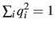
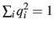
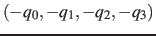

The block orientation {...} returns the
same optimal rotation used in the rmsd component to
superimpose the coordinates
 onto a set of
reference coordinates
onto a set of
reference coordinates
 . Such
component returns a four dimensional vector
. Such
component returns a four dimensional vector
 , with
; this quaternion
expresses the optimal rotation
, with
; this quaternion
expresses the optimal rotation
 according to the formalism in
reference [#!Coutsias2004!#]. The quaternion
according to the formalism in
reference [#!Coutsias2004!#]. The quaternion
 can also be written as
can also be written as
 , where
, where  is the angle and
is the angle and
 the normalized axis of rotation; for example, a rotation
of 90
the normalized axis of rotation; for example, a rotation
of 90 around the axis is expressed as
``(0.707, 0.0, 0.0, 0.707)''. The script
quaternion2rmatrix.tcl provides Tcl functions for converting
to and from a
around the axis is expressed as
``(0.707, 0.0, 0.0, 0.707)''. The script
quaternion2rmatrix.tcl provides Tcl functions for converting
to and from a
 rotation matrix in a format suitable for
usage in VMD.
rotation matrix in a format suitable for
usage in VMD.
As for the component rmsd, the available options are atoms and refPositions.
Note: refPositions define the set of positions from which the optimal rotation is calculated, but this rotation is not applied to the coordinates of the atoms involved: it is used instead to define the variable itself.
-
closestToQuaternion
 Reference rotation
Reference rotation
Context: orientation
Acceptable values: ``(q0, q1, q2, q3)'' quadruplet
Default value: (1.0, 0.0, 0.0, 0.0) (``null'' rotation)
Description: Between the two equivalent quaternions
and
, the closer to (1.0, 0.0, 0.0,
0.0) is chosen. This simplifies the visualization of the
colvar trajectory when samples values are a smaller subset of all
possible rotations. Note: this only affects the
output, never the dynamics.
Hint: stopping the rotation of a protein. To stop the
rotation of an elongated macromolecule in solution (and use an
anisotropic box to save water molecules), it is possible to define a
colvar with an orientation component, and restrain it throuh
the harmonic bias around the identity rotation, (1.0,
0.0, 0.0, 0.0). Only the overall orientation of the macromolecule
is affected, and not its internal degrees of freedom. The user
should also take care that the macromolecule is composed by a single
chain, or disable wrapAll otherwise.
Jérôme Hénin
2015-03-03